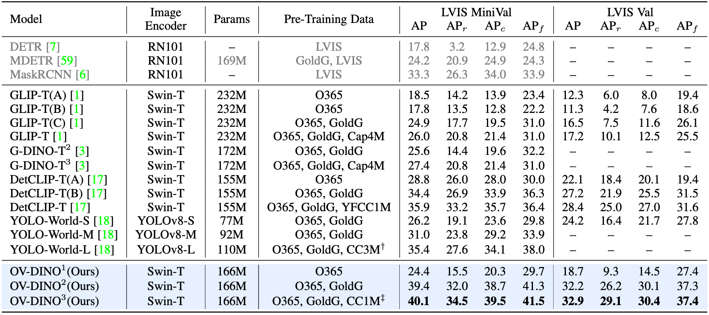
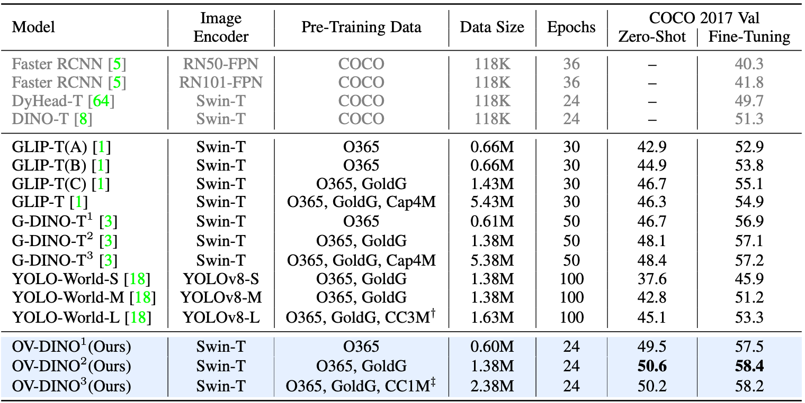

Abstract
Open-vocabulary detection is a challenging task due to the requirement of detecting objects based on class names, including those not encountered during training. Existing methods have shown strong zero-shot detection capabilities through pre-training and pseudo-labeling on diverse large-scale datasets. However, these approaches encounter two main challenges: (i) how to effectively eliminate data noise from pseudo-labeling, and (ii) how to efficiently leverage the language-aware capability for region-level cross-modality fusion and alignment. To address these challenges, we propose a novel unified open-vocabulary detection method called OV-DINO, which is pre-trained on diverse large-scale datasets with language-aware selective fusion in a unified framework. Specifically, we introduce a Unified Data Integration (UniDI) pipeline to enable end-to-end training and eliminate noise from pseudo-label generation by unifying different data sources into detection-centric data format. In addition, we propose a Language-Aware Selective Fusion (LASF) module to enhance the cross-modality alignment through a language-aware query selection and fusion process. We evaluate the performance of the proposed OV-DINO on popular open-vocabulary detection benchmarks, achieving state-of-the-art results with an AP of 50.6% on the COCO benchmark and 40.1% on the LVIS benchmark in a zero-shot manner, demonstrating its strong generalization ability. Furthermore, the fine-tuned OV-DINO on COCO achieves 58.4% AP, outperforming many existing methods with the same backbone.
Overview

The pre-training of OV-DINO comprises three primary data sources (Detection, Grounding,Image-Text). OV-DINO has three main components: a text encoder, a image encoder, and a language-aware detection decoder. First, we process the text inputs with Unified Data Integration pipeline to ensure embedding representation consistency across these data sources. Then, the unified prompted text inputs go through a Text Encoder to extract the text embedding, and the original image inputs undergo an Image Encoder and some Encoder Layers to output the multi-scale refined image embedding. Subsequently, we employ the Language-Aware Query Selection to select the most relevant image embedding with the text embedding as the object embedding. The selected object embedding and the learnable content queries go through the Language-Aware Decoder to fuse the content queries dynamically. Finally, OV-DINO outputs the classification scores by calculating the similarity of the projected query embedding with the text embedding through region-text alignment, and the regressed bounding boxes via an MLP layer.
Results
Results on LVIS
Results on COCO
Online Demo
We provide the online demo, click and enjoy !!!
Acknowledgement
This project has referenced some excellent open-sourced repos Detectron2, detrex , GLIP , G-DINO , YOLO-World . Thanks for their wonderful works and contributions to the community.
BibTeX
@article{wang2024ovdino,
title={OV-DINO: Unified Open-Vocabulary Detection with Language-Aware Selective Fusion},
author={Hao Wang and Pengzhen Ren and Zequn Jie and Xiao Dong and Chengjian Feng and Yinlong Qian and Lin Ma and Dongmei Jiang and Yaowei Wang and Xiangyuan Lan and Xiaodan Liang},
journal={arXiv preprint arXiv:2407.07844},
year={2024}
}